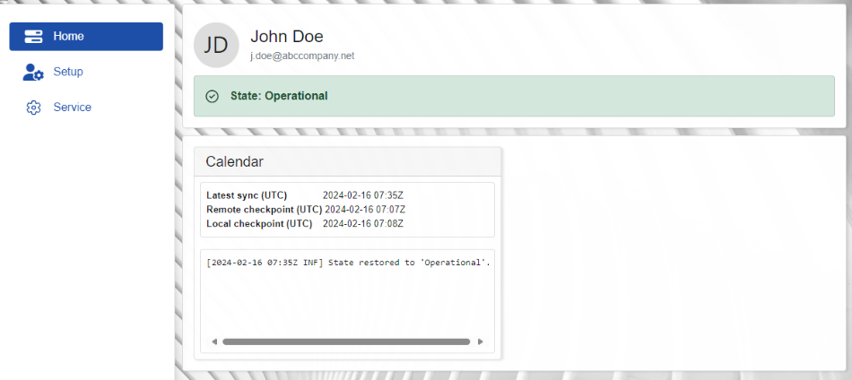

Overview
MsSync is a website application designed to synchronize resources between ERP.net and Office 365.
Each synchronization task is referred to as a job, allowing resources created in Office 365 to be automatically reflected in the corresponding module in ERP.net, and the other way around.
An example of such a job is the Calendar.

Getting started
First, ensure that your organization uses Azure Athentication and that the organization's domain is configured in ERP.net.
Second, a website with the type "Microsoft Sync" must be set up in your ERP.net database.
Third, an ERP.net admin needs to log in to MSSync and grant access to your Microsoft 365 resources using the Service menu.
Finally, each user who wants to use synchronization must sign in to MSSync to activate it, following these steps:
Login to the company's MSSync website. To access MSSync, it’s mandatory to sign in using the 'Sign in with Microsoft' button with the Microsoft account provided by your organization.
To establish the link, you will need to read and accept the permissions MSSync needs to obtain.

If you use local ERP credentials to log in, MsSync will still open, but will essentially deny you any kind of access to its resources.

Warning
You must log in via an existing Microsoft account in order to reference your Outlook calendar. Otherwise, MSSync would be unable to determine which calendar to link to.
- Then select your default enterprise company, location, and time zone and activate the desired synchronizations using the Setup menu.
Main menu
The MSSync app consists of three sections:
In Home, you'll find personal profile details, general information about the current state of your application, as well as the latest log data for your activated sync jobs.

In Setup, you can see information about your enterprise company - the one that is currently linked to MSSync.
Additionally, you can toggle synchronization for a specific sync job on or off.

The Service section is meant for users with administrator access levels. It reveals more technical and sensitive details used in the communication between MSSync and Office365.
From here, admins can securely connect their MSSync instance to their Microsoft Entra ID. This is essential for activating all synchronization-related functionalities.

For more information about navigating, setting up, and configuring MsSync, see:
Note
The screenshots taken for this article are from v24 of the platform.